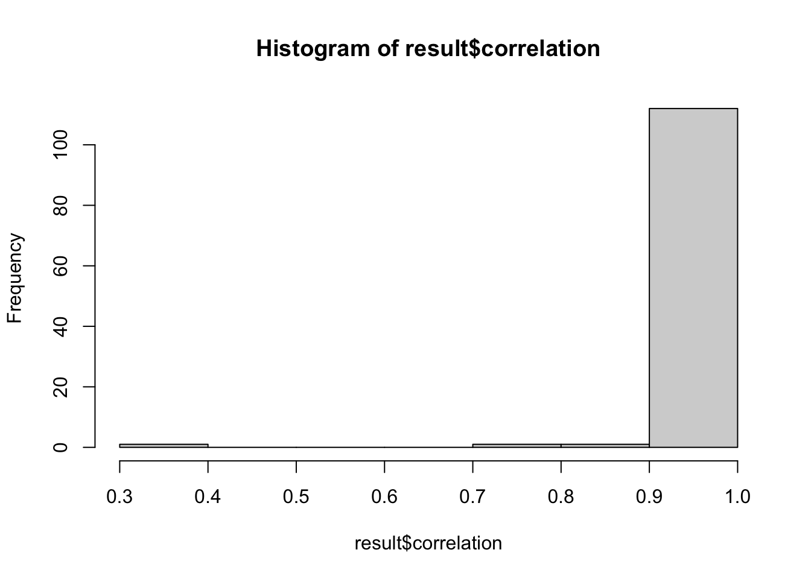
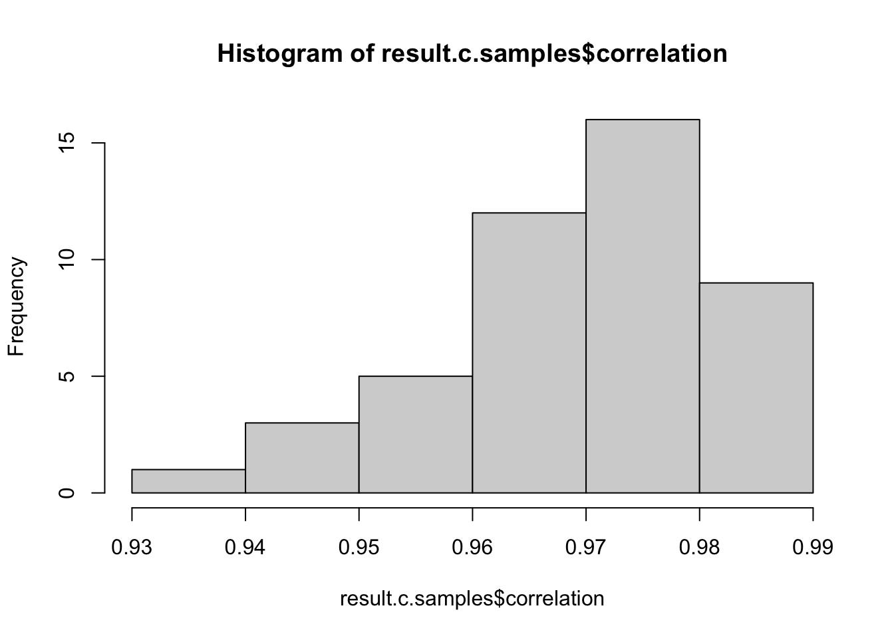
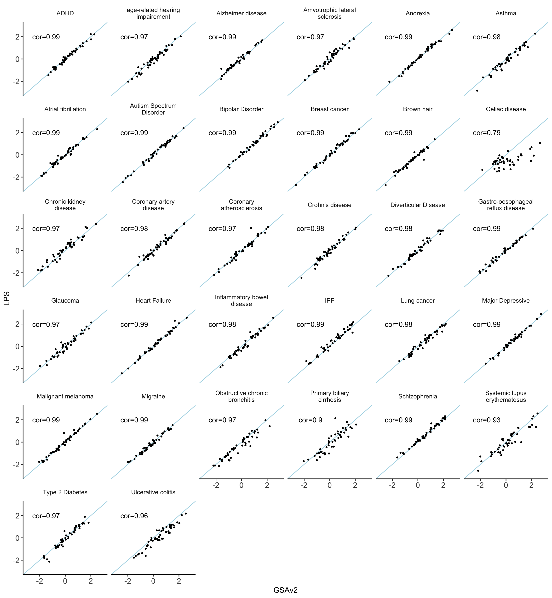
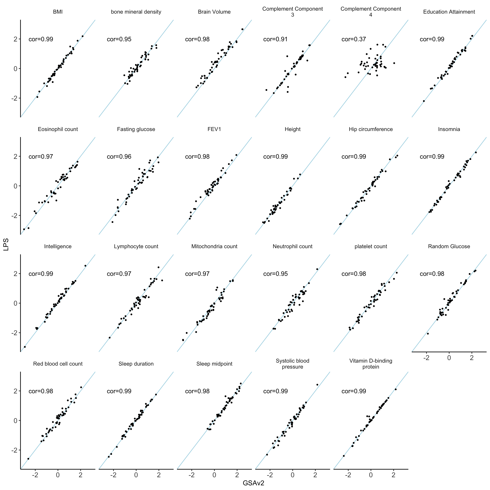
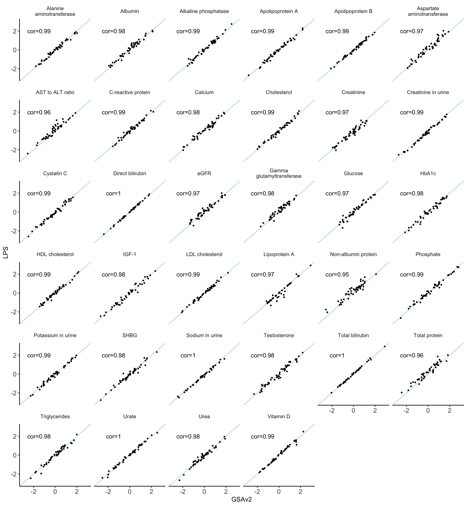
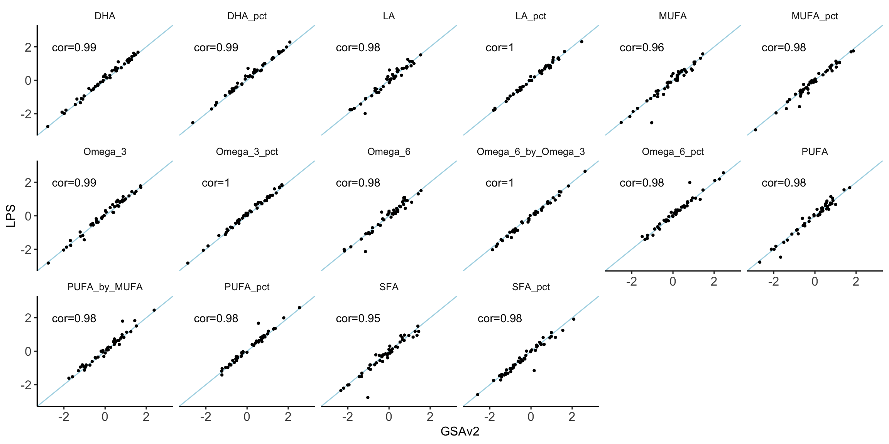
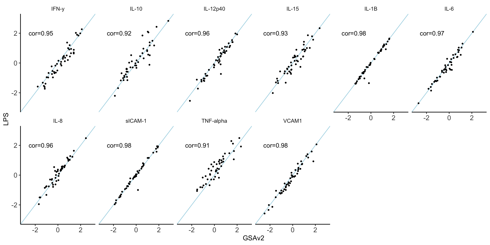
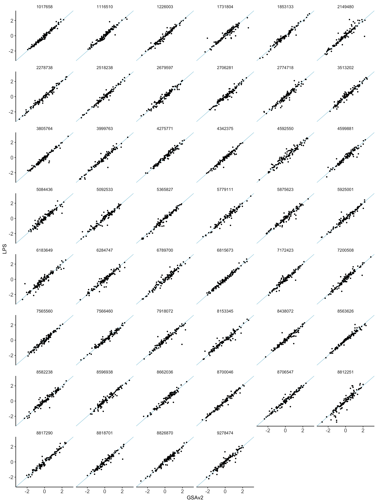
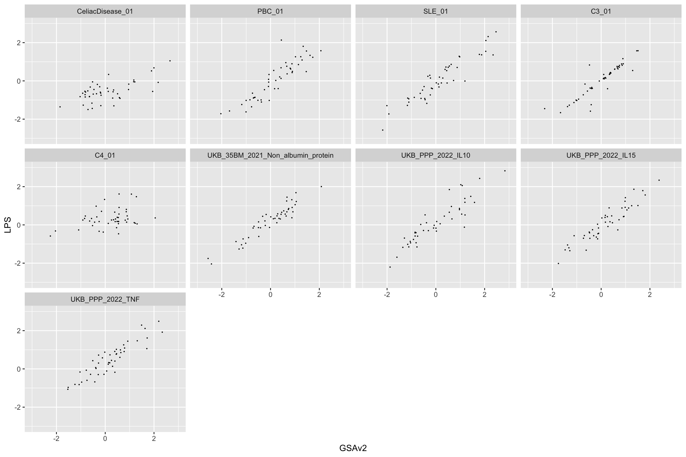

Low Coverage Whole Genome Sequencing data
1 Introduction
As a trial for the validity of lcWGS, 48 samples previously genotyped with Illumina GSAv2+MD were submitted for lcWGS including NA06997. Library preparation was conducted in house at the UQ Human Studies Unit and submitted for sequencing in UQ sequencing facility. The 48 samples were pooled with multiplexing, and sequenced in one lane, setting paired end 150bp reads on a SP flowcell using NovaSeq Illumina. Raw data were transferred to us in FastQ format. All samples passed FastQC quality threshold, and the reads were mapped to human genome assembly build 37 using the bwa in GATK. The GATK best practice pipeline was applied, (sort using sambamba, mark-dup using GATK, Base Quality Score Recalibration using GATK). Missing SNPs in data were imputed using GLIMPSE25 against the downloaded HRCr1.1 imputation panel. GLIPMSE2 uses the reference data to decide the chunks required to speed up imputation in parallel jobs. It connects the imputed chunks into one data per sample in VCF format. The SNP list in imputed data is the same as in the HRC imputation panel.
Related reading:
https://www.genewiz.com/Public/Services/Next-Generation-Sequencing/Low-Pass-WholeGenomeSequencing/
2 Alignment
The first step to process low pass sequencing data is the same as whole genome sequencing data. We used FastQC to check the quality and they all passed. Then we aligned them to the human genome build 19 using the best practice in GATK pipeline.
2.1 tools and references
## BWA
## http://bio-bwa.sourceforge.net
## Li H. and Durbin R. (2010) Fast and accurate long-read alignment with Burrows-Wheeler Transform. Bioinformatics, Epub. [PMID: 20080505]
# bwa-0.7.17.tar.bz2 is downloaded from
#https://sourceforge.net/projects/bio-bwa/
tar -xf bwa-0.7.17.tar.bz2
cd bwa-0.7.17
make
cp bwa ~/bin/
##Version: 0.7.17-r1188
## sambamba
https://github.com/biod/sambamba/releases
wget https://github.com/biod/sambamba/releases/download/v0.8.2/sambamba-0.8.2-linux-amd64-static.gz
gunzip sambamba-0.8.2-linux-amd64-static.gz
chmod u+x sambamba-0.8.2-linux-amd64-static
## Picard
https://github.com/broadinstitute/picard/releases/tag/2.27.4
# click on picard.jar
##GATK
wget https://github.com/broadinstitute/gatk/releases/download/4.2.6.1/gatk-4.2.6.1.zip
unzip gatk-4.2.6.1.zip
## bundle_source
## use Finder --> go to server
ftp://gsapubftp-anonymous@ftp.broadinstitute.org/bundle/
## hg19
2.2 align the reads
i=$TASK_ID
WD=/scratch/60days/uqtlin5/X1WGS
ref=${WD}/Pipeline/ucsc.hg19.fasta
samplesheet=${WD}/samplesheet.txt
ncpus=10
cd $WD
sID=$( awk '{print $1}' $samplesheet | head -n $i | tail -n 1 )
filename1=$( awk '{print $2}' $samplesheet | head -n $i | tail -n 1 )
filename2=$( awk '{print $3}' $samplesheet | head -n $i | tail -n 1 )
module load samtools
## index the reference
## bwa index Pipeline/ucsc.hg19.fasta
## run alignment
bwa mem -M -t $ncpus $ref Raw_Data/$filename1 Raw_Data/$filename2 -R "@RG\tID:${sID}\tPL:ILLUMINA\tSM:${sID}" | samtools view -bS > TMPDIR/${bamPrefix}.tmp.bam
## run sort bam
sambamba sort -t $ncpus -m 200G -o TMPDIR/${sID}.sort.bam TMPDIR/${sID}.tmp.bam
rm TMPDIR/${sID}.tmp.bam
## mark duplicates
java -jar picard.jar MarkDuplicates I=TMPDIR/${sID}.sort.bam O=TMPDIR/${sID}.markdup.bam M=TMPDIR/${sID}.dupStat 2.3 recalibration
i=$TASK_ID
WD=/scratch/60days/uqtlin5/X1WGS
cd $WD
samplesheet=${WD}/samplesheet.txt
sID=$( awk '{print $1}' $samplesheet | head -n $i | tail -n 1 )
sortedNoDup=${WD}/TMPDIR/${sID}.markdup.bam
outDir=${WD}/TMPDIR/
ref=${WD}/Pipeline/hg19/ucsc.hg19.fasta
knownsite1=dbsnp_138.hg19
knownsite2=1000G_omni2.5.hg19.sites
knownsite3=1000G_phase1.indels.hg19.sites
knownsite4=1000G_phase1.snps.high_confidence.hg19.sites
knownsite5=CEUTrio.HiSeq.WGS.b37.bestPractices.hg19
knownsite6=dbsnp_138.hg19.excluding_sites_after_129
knownsite7=hapmap_3.3_hg19_pop_stratified_af
knownsite8=hapmap_3.3.hg19.sites
knownsite9=Mills_and_1000G_gold_standard.indels.hg19.sites
knownsite10=NA12878.HiSeq.WGS.bwa.cleaned.raw.subset.hg19.sites
knownsite11=NA12878.HiSeq.WGS.bwa.cleaned.raw.subset.hg19
knownsite12=NA12878.knowledgebase.snapshot.20131119.hg19
## get the recal table
${WD}/Pipeline/gatk-4.1.9.0/gatk BaseRecalibrator \
-I $sortedNoDup \
-R $ref \
--known-sites hg19/${knownsite1}.vcf.gz \
--known-sites hg19/${knownsite2}.vcf.gz \
--known-sites hg19/${knownsite3}.vcf.gz \
--known-sites hg19/${knownsite4}.vcf.gz \
--known-sites hg19/${knownsite5}.vcf.gz \
--known-sites hg19/${knownsite6}.vcf.gz \
--known-sites hg19/${knownsite7}.vcf.gz \
--known-sites hg19/${knownsite8}.vcf.gz \
--known-sites hg19/${knownsite9}.vcf.gz \
--known-sites hg19/${knownsite1}.vcf.gz \
--known-sites hg19/${knownsite11}.vcf.gz \
--known-sites hg19/${knownsite12}.vcf.gz \
--showHidden \
-O ${outDir}/${sID}_recal_data.table_1_12
## run recal
gatk-4.1.9.0/gatk ApplyBQSR \
-R $ref \
-I $sortedNoDup \
--bqsr-recal-file ${outDir}/${sID}_recal_data.table_1_12 \
-O ${outDir}/${sID}_recal_1_12.bam
## plot recal
gatk-4.1.9.0/gatk AnalyzeCovariates \
-bqsr ${outDir}/${sID}_recal_data.table_1_12 \
-plots ${outDir}/${sID}_recal_AnalyzeCovariates_1_12.pdf3 use GLYMPSE2 to impute data
GLYMPSE2 is a new tool that takes the alignment files as input and impute against a reference genome. GLYMPSE2 could take in haplotype information. It’s much better than loimpute, which impute using the called variants from alignment.
3.1 use reference data to make chunk files
chr=$SLURM_ARRAY_TASK_ID
cd /scratch/project/genetic_data_analysis/uqtlin5/Low_pass_sequencing
module load bcftools
mapfile=1000GP_Phase3/genetic_map_chr${chr}_combined_b37.txt
## HRC version
reffile=HRC.r1-1.EGA.GRCh37.chr${chr}.haplotypes.vcf.gz
bcftools annotate --rename-chrs chr_name_conv.txt /QRISdata/Q3046/Reference/HRC//$reffile | bgzip > chr_renamed_HRC_haplotype_vcf/${reffile}
tabix -p vcf chr_renamed_HRC_haplotype_vcf/${reffile}
./GLIMPSE2/GLIMPSE2_chunk_static --input chr_renamed_HRC_haplotype_vcf/$reffile \
--sequential \
--region chr${chr} \
--output chunks_HRC.chr${chr}.txt \
--map $mapfile
3.2 chunk the reference data
First we generate a chunk file merging from 22 chromosomes.
for ((i = 1; i <= 22; i++)); do
cat chunks_HRC.chr${i}.txt >> chunks_HRC.txt
doneThen we will generate a chunked reference data based on each row of this chunk file.
## for each chromosome we will run
LINE=$SLURM_ARRAY_TASK_ID
cd /scratch/project/genetic_data_analysis/uqtlin5/Low_pass_sequencing
sample=NA06997_COR_S29
refdata=HRC
BAM=${sample}_recal_1_12.bam
chunkfile=chunks_${refdata}_chr1.txt
OUTDIR=GLIMPSE2_imputed_with_${refdata}
mkdir -p $OUTDIR
OUT=${OUTDIR}/${sample}_imputed
CHR=$(sed "${LINE}q;d" $chunkfile | awk '{print $2}' )
IRG=$(sed "${LINE}q;d" $chunkfile | awk '{print $3}' )
ORG=$(sed "${LINE}q;d" $chunkfile | awk '{print $4}' )
REGS=$(echo ${IRG} | cut -d":" -f 2 | cut -d"-" -f1)
REGE=$(echo ${IRG} | cut -d":" -f 2 | cut -d"-" -f2)
mapfile=1000GP_Phase3/genetic_map_${CHR}_combined_b37.txt
./GLIMPSE2/GLIMPSE2_split_reference_static \
--reference chr_renamed_${refdata}_haplotype_vcf/HRC.r1-1.EGA.GRCh37.${CHR}.haplotypes.vcf.gz \
--map ${mapfile} \
--input-region ${IRG} \
--output-region ${ORG} \
--output Splitted_${refdata}_panel/${refdata}
3.3 pipeline the imputation for all samples
The data will be imputed into chunks using each chunked reference data.
## the whole genome has 771 chunks.
LINE=$SLURM_ARRAY_TASK_ID
cd /scratch/project/genetic_data_analysis/uqtlin5/Low_pass_sequencing
refdata=HRC
OUTDIR=GLIMPSE2_imputed_with_${refdata}
chunkfile=chunks_${refdata}.txt
CHR=$(sed "${LINE}q;d" $chunkfile | awk '{print $2}' )
IRG=$(sed "${LINE}q;d" $chunkfile | awk '{print $3}' )
ORG=$(sed "${LINE}q;d" $chunkfile | awk '{print $4}' )
REGS=$(echo ${IRG} | cut -d":" -f 2 | cut -d"-" -f1)
REGE=$(echo ${IRG} | cut -d":" -f 2 | cut -d"-" -f2)
while IFS= read -r BAM; do
./GLIMPSE2/GLIMPSE2_phase_static \
--bam-file BQRS/${BAM}_recal_1_12.bam \
--reference Splitted_${refdata}_panel/${refdata}_${CHR}_${REGS}_${REGE}.bin \
--output ${OUTDIR}/${BAM}_imputed_${CHR}_${REGS}_${REGE}.bcf
done < bam_file_list.txt
3.4 ligate the imputed chunks
The imputed chunks are then concatenated together into a bcf file for each sample.
# ligate
while IFS= read -r BAM; do
LST=GLIMPSE2_HRC_ligate/${BAM}_list.txt
ls -1v GLIMPSE2_imputed_with_HRC/${BAM}_imputed_*.bcf > ${LST}
OUT=GLIMPSE2_HRC_ligate/${BAM}_ligated.bcf
job_name="ligate_"${BAM}
ligatesub=`qsubshcom " ./GLIMPSE2/GLIMPSE2_ligate_static --input ${LST} --output $OUT " 1 150G $job_name 24:00:00 " " `
done < bam_file_list.txt
3.5 reformat the data
For the next step, files are converted from bcf format to vcf format
## convert bcf to vcf
while IFS= read -r BAM; do
bcftools convert -O v -o GLIMPSE2_HRC_ligate/${BAM}_ligated.vcf GLIMPSE2_HRC_ligate/${BAM}_ligated.bcf
done < bam_file_list.txt3.6 extract SNPs
To reduce the computation burdon, I extracted the 7.3M SNPs from the data.
## convert bcf to vcf
while IFS= read -r BAM; do
grep "^#" GLIMPSE2_HRC_ligate/${BAM}_ligated.vcf > ${BAM}_ligated_dbSNP.vcf
grep -v "^#" GLIMPSE2_HRC_ligate/${BAM}_ligated.vcf | grep -w -f SNPs_in_7.4M.txt >> ${BAM}_ligated_dbSNP.vcf
done < bam_file_list.txtData of all the samples are merged into one file.
## merge all samples
## did in both folder GLIMPSE2_HRC_ligate_vcf and dbSNP_of_GLIMPSE2_imputed_with_HRC
for file in *.vcf; do
bgzip -c "$file" > "${file}.gz"
bcftools index "${file}.gz"
done
qsubshcom " bcftools merge -o LPS_all48samples.vcf.gz -O v -@ 4 *.vcf.gz " 4 150G "merge" 56:00:00 " "
bcftools merge -o LPS_all48samples.vcf.gz -O v *.vcf.gz
4 Profile PRS
PRS are profiled from the merged vcf file directly.
i=$SLURM_ARRAY_TASK_ID
cd /scratch/project/genetic_data_analysis/uqtlin5/Low_pass_sequencing
traitfile="GCTB_SBayesRC_predictors.txt"
trait=$(sed "${i}q;d" $traitfile | awk '{print $1}' )
predictor=$(sed "${i}q;d" $traitfile | awk '{print $2}' )
outdir=PRS_all_GCTB
input=dbSNP_of_GLIMPSE2_imputed_with_HRC/LPS_dbSNP_set.vcf.gz
cohort="LPS"
mkdir -p $outdir
plink \
--vcf $input \
--const-fid \
--score $predictor 2 5 8 header sum \
--out ${outdir}/${cohort}_${trait}_SBayesRC
5 get corresponding samples from chip data
46 out of the 47 samples in this pilot study were genotyped using GSA chip in HSU lab. Here we profiled PGS from the imputed chip data.
The data were processed in the same way as other HSU data.
traitfile="../GCTB_SBayesRC_predictors.txt"
trait=$(sed "${i}q;d" $traitfile | awk '{print $1}' )
predictor=$(sed "${i}q;d" $traitfile | awk '{print $2}' )
outdir=PRS_all_GCTB
mkdir -p $outdir
cohort=MND_B3
input=MND_B3_GSA_imputed_fixed
plink \
--bfile $input \
--score $predictor 2 5 8 header sum \
--out ${outdir}/${cohort}_${trait}_SBayesRC
6 Compare PGS between lcWGS vs. GSA chip
There are 48 samples in the LPS pilot set.
1 of them is a ceph control
46 of them are also available in the MND B3 GSA data set
The other 1 is available in ALS_AUS old data. (3728601, or MND_CON_252)
6.1 ancestry of ALS samples
Here is the 46 overlap samples with PC projected to 1000g. They are all from Europeans.

6.2 correlation
6.2.1 standardize the two data
library(reshape2)
standardization.data = read.csv("Data/LifeLines_MEAN_and_SD_of_traits_for_standardization.csv")
## input PRS from low pass
lps.prs = read.csv("Data/LowPass/LPS_all_141_traits_GCTB_PRS.csv")
colnames(lps.prs)[1] = "FID"
lps.prs$IID <- sub("_.*", "", lps.prs$FID)
row.names(lps.prs) = lps.prs$IID
lps.prs = lps.prs[,-c(1:2)]
lps.prs = lps.prs[,colnames(lps.prs) %in%standardization.data$trait ]
standardization.data= standardization.data[ match( colnames(lps.prs) , standardization.data$trait),]
lps.prs.norm = sweep(
sweep ( lps.prs,
2, standardization.data$mean),
2, standardization.data$sd, FUN = '/')
lps.prs.norm$IID <- row.names(lps.prs.norm)
melted.lps.prs.norm = reshape2::melt(lps.prs.norm, id.vars = "IID" )
melted.lps.prs.norm$value = as.numeric(melted.lps.prs.norm$value)## input inhouse imputed GSA data
mnd.b3.bcc = read.csv("Data/LowPass/MND_B3_BCC_GSA_all_141_traits_GCTB_PRS.csv", row.names = 1)
mnd.b3.bcc <- mnd.b3.bcc %>%
separate(IID, into = c("part1", "part2", "part3", "part4"), sep = "_", fill = "right") %>%
mutate(
V1 = part2, # Combine part1 and part2 for V1
IID = if_else(is.na(part4), part3, paste(part3, part4, sep = "_")) # Combine remaining parts for Study_ID
) %>%
select(V1,IID, everything(),-part1, -part2, -part3, -part4, -V3, -V4, -V5, -V6)
row.names(mnd.b3.bcc) = mnd.b3.bcc$IID
mnd.b3.bcc = mnd.b3.bcc[,-c(1:2)]
mnd.b3.bcc = mnd.b3.bcc[,colnames(mnd.b3.bcc) %in%standardization.data$trait ]
standardization.data= standardization.data[ match( colnames(mnd.b3.bcc) , standardization.data$trait),]
mnd.b3.bcc.norm = sweep(
sweep ( mnd.b3.bcc,
2, standardization.data$mean),
2, standardization.data$sd, FUN = '/')
mnd.b3.bcc.norm$IID <- row.names(mnd.b3.bcc.norm)
melted.mnd.b3.bcc.norm = reshape2::melt(mnd.b3.bcc.norm, id.vars = "IID" )
melted.mnd.b3.bcc.norm$value = as.numeric(melted.mnd.b3.bcc.norm$value)6.2.2 select traits
predictor.list = read.csv("Tables/SupTable2_Predictors.csv")
included_traits = predictor.list$Predictor
## grouping traits
traits_binary = predictor.list[which(predictor.list$QorB == "Binary" ),"Predictor"]
traits_quanti = predictor.list[which(predictor.list$Location == "Uno_Traits/Quantitative_Traits/"),"Predictor"]
traits_35bm = predictor.list[which(predictor.list$Location == "Lot_Traits/UKB_35BM_2021/"),"Predictor"]
traits_ppp = predictor.list[which(predictor.list$Location == "Lot_Traits/UKB_PPP_2022/"),"Predictor"]
traits_fa = predictor.list[which(predictor.list$Location == "Lot_Traits/UKB_Fatty_Acids/"),"Predictor"]
## select data
melted.mnd.b3.bcc.norm = melted.mnd.b3.bcc.norm[melted.mnd.b3.bcc.norm$variable %in% included_traits,]
melted.lps.prs.norm = melted.lps.prs.norm[melted.lps.prs.norm$variable %in% included_traits,]6.2.3 merge the two data
colnames(melted.mnd.b3.bcc.norm)[3] = "GSAv2"
colnames(melted.lps.prs.norm)[3] = "LPS"
melted.both = merge(melted.lps.prs.norm,
melted.mnd.b3.bcc.norm[, c("IID", "variable", "GSAv2")],
by = c("IID", "variable"),
all.x = TRUE)
melted.both$LPS = as.numeric(melted.both$LPS)
melted.both$GSAv2 = as.numeric(melted.both$GSAv2)
melted.both$Trait = predictor.list[match(melted.both$variable, predictor.list$Predictor),"Label"]
melted.SALSA = na.omit(melted.both)6.2.4 compare across traits
result <- melted.SALSA %>%
group_by(variable) %>%
summarise(correlation = cor(LPS, GSAv2, use = "complete.obs"), .groups = "drop")
result = data.frame(result)
result$Trait = predictor.list[match(result$variable, predictor.list$Predictor),"Label"]
result$cor = paste0("cor=", round(result$correlation, 2) )
result %>% filter(correlation < 0.95) %>% arrange((correlation))hist(result$correlation)
mean is 0.9709689
SD is 0.062162
6.2.5 across samples
result.c.samples <- melted.SALSA %>%
group_by(IID) %>%
summarise(correlation = cor(LPS, GSAv2))
summary(result.c.samples$correlation)## Min. 1st Qu. Median Mean 3rd Qu. Max.
## 0.9350 0.9648 0.9733 0.9697 0.9782 0.9879hist(result.c.samples$correlation)
6.3 plot
6.3.1 binary
nbm.plot = ggplot(data = melted.both[ melted.both$variable %in% traits_binary,], aes(x = GSAv2, y = LPS)) +
facet_wrap(~Trait, ncol= 6, labeller = labeller(Trait = function(x) str_wrap(x, width = 20))) +
geom_abline(intercept = 0, slope = 1, color = "lightblue") +
geom_point(size = 0.8) +
xlim(-3,3) + ylim(-3,3) +
theme_classic(base_size = 12) +
theme(
panel.grid.major = element_blank(), # Remove major grid lines
panel.grid.minor = element_blank(), # Remove minor grid lines
plot.title = element_text(hjust = 0.5),
axis.title = element_text(),
axis.text = element_text(size = 12),
strip.background = element_blank()
) +
geom_text(data = result[result$variable %in% traits_binary,],aes(x = -1.5, y = 2, label = cor) )
nbm.plot## Warning: Removed 81 rows containing missing values or values outside the scale range
## (`geom_point()`).
#ggsave(plot = nbm.plot,filename = "Figures/SupFig2_lcWGS_vs_GSAvs_binary_traits.jpeg" , width = 12, height = 13)6.3.2 quantitative
nbm.plot = ggplot(data = melted.both[ melted.both$variable %in% traits_quanti,], aes(x = GSAv2, y = LPS)) +
facet_wrap(~Trait, ncol= 6, labeller = labeller(Trait = function(x) str_wrap(x, width = 20))) +
geom_abline(intercept = 0, slope = 1, color = "lightblue") +
geom_point(size = 0.8) +
xlim(-3,3) + ylim(-3,3) +
theme_classic(base_size = 12) +
theme(
panel.grid.major = element_blank(), # Remove major grid lines
panel.grid.minor = element_blank(), # Remove minor grid lines
plot.title = element_text(hjust = 0.5),
axis.title = element_text(),
axis.text = element_text(size = 12),
strip.background = element_blank()
) +
geom_text(data = result[result$variable %in% traits_quanti,],aes(x = -1.5, y = 2, label = cor) )
nbm.plot## Warning: Removed 52 rows containing missing values or values outside the scale range
## (`geom_point()`).
#ggsave(plot = nbm.plot,filename = "Figures/SupFig2_lcWGS_vs_GSAvs_quantitative_traits.jpeg" , width = 12, height = 9)6.3.3 Biomarker
nbm.plot = ggplot(data = melted.both[ melted.both$variable %in% traits_35bm,], aes(x = GSAv2, y = LPS)) +
facet_wrap(~Trait, ncol= 6, labeller = labeller(Trait = function(x) str_wrap(x, width = 20))) +
geom_abline(intercept = 0, slope = 1, color = "lightblue") +
geom_point(size = 0.8) +
xlim(-3,3) + ylim(-3,3) +
theme_classic(base_size = 12) +
theme(
panel.grid.major = element_blank(), # Remove major grid lines
panel.grid.minor = element_blank(), # Remove minor grid lines
plot.title = element_text(hjust = 0.5),
axis.title = element_text(),
axis.text = element_text(size = 12),
strip.background = element_blank()
) +
geom_text(data = result[result$variable %in% traits_35bm,],aes(x = -1.5, y = 2, label = cor) )
nbm.plot## Warning: Removed 72 rows containing missing values or values outside the scale range
## (`geom_point()`).
#ggsave(plot = nbm.plot,filename = "Figures/SupFig2_lcWGS_vs_GSAvs_35BM.jpeg" , width = 12, height = 13)6.3.4 fatty acid
nbm.plot = ggplot(data = melted.both[ melted.both$variable %in% traits_fa,], aes(x = GSAv2, y = LPS)) +
facet_wrap(~Trait, ncol= 6, labeller = labeller(Trait = function(x) str_wrap(x, width = 20))) +
geom_abline(intercept = 0, slope = 1, color = "lightblue") +
geom_point(size = 0.8) +
xlim(-3,3) + ylim(-3,3) +
theme_classic(base_size = 12) +
theme(
panel.grid.major = element_blank(), # Remove major grid lines
panel.grid.minor = element_blank(), # Remove minor grid lines
plot.title = element_text(hjust = 0.5),
axis.title = element_text(),
axis.text = element_text(size = 12),
strip.background = element_blank()
) +
geom_text(data = result[result$variable %in% traits_fa,],aes(x = -1.5, y = 2, label = cor) )
nbm.plot## Warning: Removed 37 rows containing missing values or values outside the scale range
## (`geom_point()`).
#ggsave(plot = nbm.plot,filename = "Figures/SupFig2_lcWGS_vs_GSAvs_FattyAcid_traits.jpeg" , width = 12, height = 6.5)6.3.5 PPP
nbm.plot = ggplot(data = melted.both[ melted.both$variable %in% traits_ppp,], aes(x = GSAv2, y = LPS)) +
facet_wrap(~Trait, ncol= 6, labeller = labeller(Trait = function(x) str_wrap(x, width = 20))) +
geom_abline(intercept = 0, slope = 1, color = "lightblue") +
geom_point(size = 0.8) +
xlim(-3,3) + ylim(-3,3) +
theme_classic(base_size = 12) +
theme(
panel.grid.major = element_blank(), # Remove major grid lines
panel.grid.minor = element_blank(), # Remove minor grid lines
plot.title = element_text(hjust = 0.5),
axis.title = element_text(),
axis.text = element_text(size = 12),
strip.background = element_blank()
) +
geom_text(data = result[result$variable %in% traits_ppp,],aes(x = -1.5, y = 2, label = cor) )
nbm.plot## Warning: Removed 21 rows containing missing values or values outside the scale range
## (`geom_point()`).
#ggsave(plot = nbm.plot,filename = "Figures/SupFig2_lcWGS_vs_GSAvs_PPP.jpeg" , width = 12, height = 4.5)6.3.6 per person plot
person.plot = ggplot(data = melted.both[!melted.both$IID %in% c("NA06997","3728601" ) ,], aes(x = GSAv2, y = LPS)) +
facet_wrap(~IID, ncol= 6) +
geom_abline(intercept = 0, slope = 1, color = "lightblue") +
geom_point(size = 0.8) +
xlim(-3,3) + ylim(-3,3) +
theme_classic(base_size = 12) +
theme(
panel.grid.major = element_blank(), # Remove major grid lines
panel.grid.minor = element_blank(), # Remove minor grid lines
plot.title = element_text(hjust = 0.5),
axis.title = element_text(),
axis.text = element_text(size = 12),
strip.background = element_blank()
)
person.plot## Warning: Removed 33 rows containing missing values or values outside the scale range
## (`geom_point()`).
#ggsave(plot = person.plot,filename = "Figures/SupFig2_lcWGS_vs_GSAvs_per_person.jpeg" , width = 12, height = 16)7 Find correlation outliers
result = data.frame(result)
ggplot(data = melted.SALSA[melted.SALSA$variable %in% result[which(result$correlation < 0.95), "variable"],], aes(x = GSAv2, y = LPS)) +
geom_point(size = 0.1) +
facet_wrap(~variable, ncol = 4) +
xlim(-3,3) + ylim(-3,3)## Warning: Removed 2 rows containing missing values or values outside the scale range
## (`geom_point()`).
8 PGS correlation without MHC region
We excluded the MHC region when profile PGS of C4, Celiac Disease and Primary biliary cirrhosis, respectively.
library(data.table)
a = data.frame(fread("../CeliacDisease_01_SBayesRC.snpRes"))
mhc.snp = (a[which(a$Chrom ==6 & a$Position >28477797 & a$Position<33448354),])
write.table(mhc.snp$Name, file="MHC.SNPs.txt", quote = F, sep ="\t", row.names = F, col.names = F)
outdir=PRS_withoutMHC
mkdir -p $outdir
exlist=PRS_withoutMHC/MHC.SNPs.txt
for trait in PBC_01 CeliacDisease_01 C4_01
do
echo "Processing trait: $sample"
predictor=${trait}_SBayesRC.snpRes
## chip data
cohort=MND_B3
input=MND_B3_BCC_GSA_imputed_autosomes_fixed
plink \
--bfile $input \
--score $predictor 2 5 8 header sum \
--exclude $exlist \
--out ${outdir}/${cohort}_${trait}_SBayesRC_noMHC
## LPS data
input=LPS_dbSNP_set.vcf.gz
cohort="LPS"
plink \
--vcf $input \
--const-fid \
--score $predictor 2 5 8 header sum \
--exclude $exlist \
--out ${outdir}/${cohort}_${trait}_SBayesRC_noMHC
done
library(tidyr)
library(stringr)
library(dplyr)
outputtable = data.frame(
traits=c("C4_01", "CeliacDisease_01", "PBC_01" ),
cor = NA)
for(i in 1:3){
trait=outputtable[i,1]
cohort1="LPS"
cohort2="MND_B3"
lps=read.table(paste0("PRS_withoutMHC/", cohort1,"_", trait, "_SBayesRC_noMHC.profile"), header = T )
chip=read.table(paste0("PRS_withoutMHC/",cohort2,"_", trait, "_SBayesRC_noMHC.profile"), header = T )
lps = lps %>%
separate(IID, into = c("part1", "part2", "part3", "part4"), sep = "_", fill = "right") %>%
mutate( ID = part1)
chip = chip %>%
separate(IID, into = c("part1", "part2", "part3"), sep = "_", fill = "right") %>%
mutate( ID = part3)
lps$ChipPRS = chip[match(lps$ID, chip$ID),"SCORESUM"]
outputtable[i,2] =cor(lps$SCORESUM, lps$ChipPRS, use = "complete.obs")
}| – | full PRS | PRS without MHC SNPs |
|---|---|---|
| C4 | 0.367 | 0.997 |
| Celiac Disease | 0.793 | 0.997 |
| Primary biliary cirrhosis | 0.898 | 0.994 |
This observation suggest that the main difference came from the low quality imputation in MHC region.